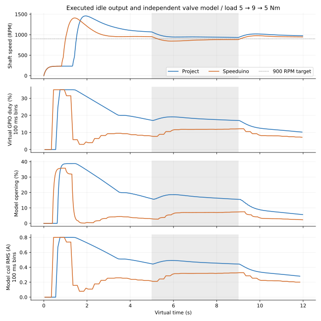
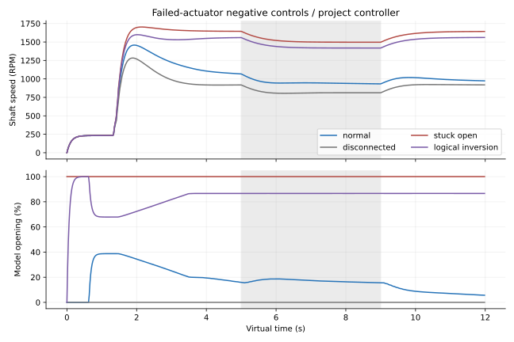
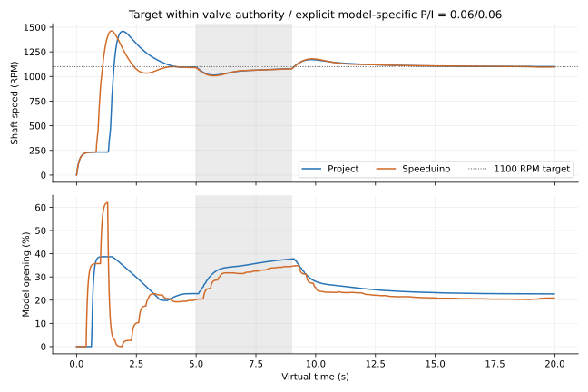
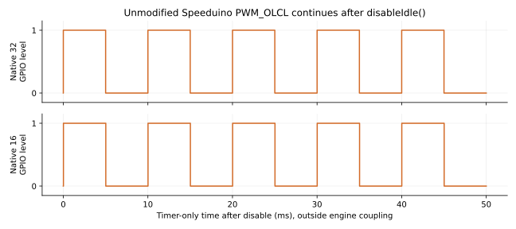

Uncalibrated Modelica air path plus empirical combustion and valve. Native controller code, virtual GPIO, zero CPU/IRQ cost. Shaded interval: added load. No physical engine qualification. Scroll figures horizontally on narrow screens.